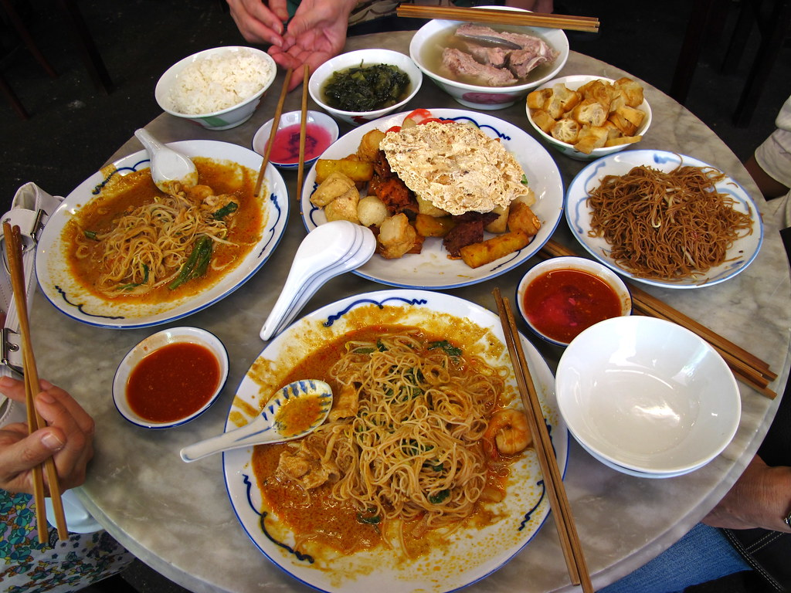
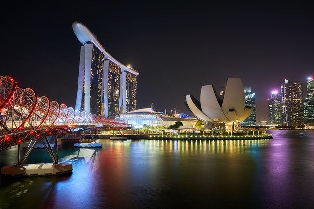

Experience
Try the mouth-watering cuisine Singapore has to offer. You'll now be
able to sate your oriental food desires once you arrive. Whether partaking
in the culturally dyanmic street food or the glorious restaurants of Singapore,
we gurantee your satisfaction.

Book Anytime
Singapore won't be going anywhere anytime soon. Though we have just opened
our window of oppurtunity in Singapore, our team at Slipstream still wish for the safety of the customers who
travel with us and the safety of the countries we provide agency to. We are still in a global pandemic and with the
help of our customers adhering to our and other countries health guidelines, we can continue to operate smoothly.